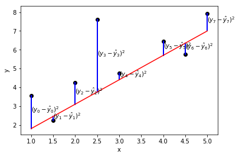

Keyboard shortcuts:
N/СпейсNext Slide
PPrevious Slide
OSlides Overview
ctrl+left clickZoom Element
If you want print version => add '
?print-pdf' at the end of slides URL (remove '#' fragment) and then print.
Like: https://wwwcourses.github.io/...CourseIntro.html?print-pdf
Linear models for classification and regression 2
Created for

Iva E. Popova, 2024,

Least Squares Method
Mean Absolute Error
- Mean Absolute Error (MAE) is is the mean of the absolute value of the errors
- Mean Absolute Error (MAE) is the average vertical/horizontal distance between each point and the identity line.
$$\frac 1n\sum_{i=1}^n|y_i-\hat{y}_i|$$

Mean Squared Error
- Mean Squared Error (MSE) is the mean of the squared errors:
- MSE "punishes" larger errors, which is quite useful in the real world -
${MSE} ={\frac {1}{n}}\sum _{i=1}^{n}(Y_{i}-{\hat {Y_{i}}})^{2} $
Root Mean Squared Error
- Root Mean Squared Error (RMSE) is the square root of the mean of the squared errors:
- RMSE is interpretable in the "y" units.
$$\sqrt{\frac 1n\sum_{i=1}^n(y_i-\hat{y}_i)^2}$$
Scikit-learn Demo
Scikit-learn Demo
- Simple Linear Regression
- simple_linear_regression.ipynb
- Advertising && Sales Prediction
- Advertising_Demo.ipynb
The Logistic Regression Algorithm
The Logistic Regression Algorithm
Overview
- Used to predict a categorical dependent variable
- I.e. the output is binary/discrete
- {0 or 1} / {True or False} / {High and Low} ...
Overview
- Logistic regression uses the same equation as Linear Regression, but here we need the target (ouput) $y$ to be in the range of 0..1, not infinite.
- But if we pass it to the sigmoid function, we can manage to do that

The sigmoid Function
$$ S(x)={\frac {1}{1+e^{-x}}}={\frac {e^{x}}{e^{x}+1}}. $$

Demos/Task
- Titanic Survivals
- Get the data from here: all.zip
- Task:
- Get familiar with the dataset: Titanic dataset @kaggle
- Try to clean and wrangle the data, so that we have only numbers in each feature column.
LogisticRegression - TitanicDemo Solution
- View as html: LogisticRegression - TitanicDemo.html
Multi-class classification with Linear models.
Multi-class classification with Linear models.
Overview

Optimizations - Gradient Descent Algorithm
Optimizations - Gradient Descent Algorithm
- Gradient Descent is an algorithm that finds the best-fit line for a given training dataset in a smaller number of iterations.
- Reference: Gradient descent @wikipedia
- Self-learning: Gradient Descent Algorithm — a deep dive

{kind=link}
Pros and Cons of Linear Models
Pros and Cons of Linear Models
Pros
- Simple to explain
- Model training and prediction are fast
- No tuning is required (could be Cons, as well)
- Features don't need scaling
- Can perform well with a small number of observations
- Easy to interpret the results
Cons
- Presumes a linear relationship between the features and the target - not a usual real-world situation.
- Performance is not competitive with the best supervised learning methods due to high bias
- Sensitive to irrelevant features
- Can't automatically learn feature interactions